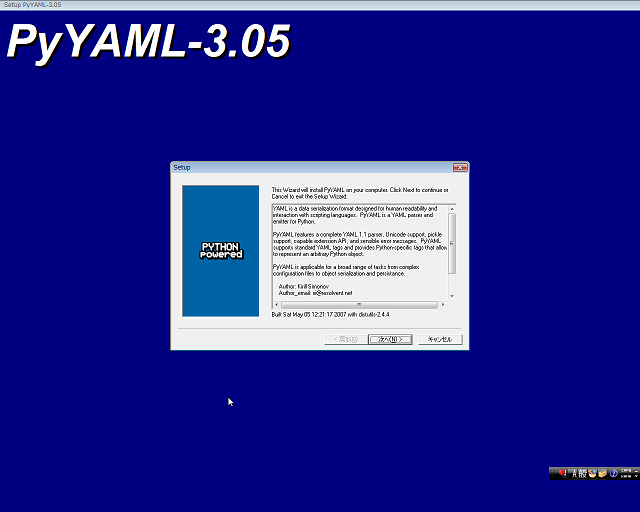
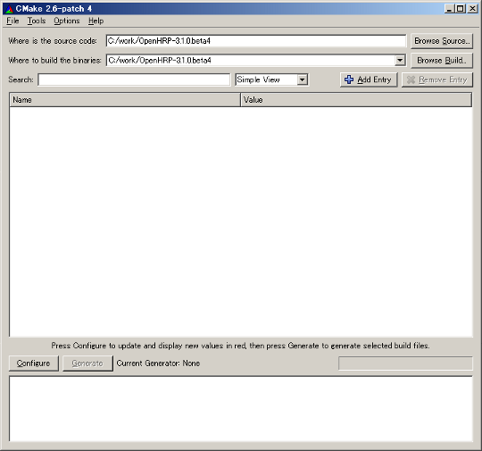
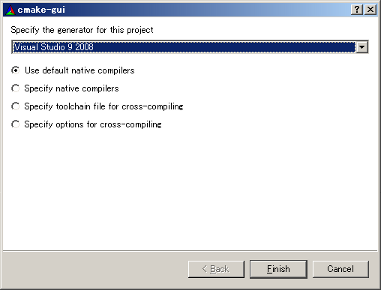
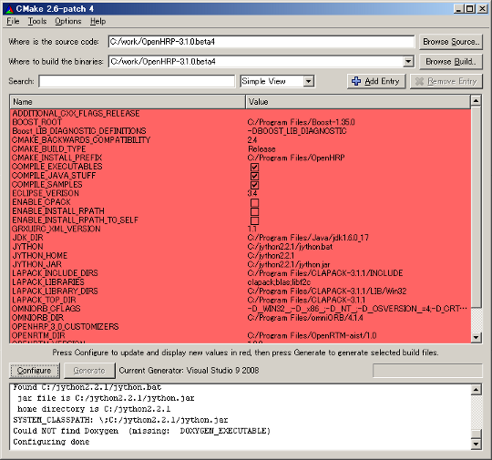

Table of contents
It is the usual installation procedure. We explain on this page.
Before you beginPlease confirm that if your "Computer Name" is not longer than 8 letters and contains alpha-numeric letters only. Unless the Nameserver will not be started normally. Please refer here for more details. Setup EnvironmentAt first, please install required softwares to compile/run OpenHRP3 as belowing procedures.
Although 32 bit software can run in 64 bit OS, you need to choose either OpenHRP for 32 bit, or for 64bit. Please do not mix them in required softwares. If you have already installed a compatible version of following software, you can simply skip that part of installation and use the currently installed package. Also you are free to browse and change the installing path and set where ever you wish to install. If you choose a different location instead of default installing path, please beware to specify that in "CMake Build" properties explained below. Installing Visual C++ Compiler
Currently we support Visual C++ 2010, Visual C++ 2008 as C++ compiler for Windows. You can use Express Edition(free distributed) as well as commercial editions of Visual C++ provided by Microsoft. If you wish to install the Express Edition, use the following link and download the web-installer of "Visual C++ 2010 Express Edition" or "Visual C++ 2008 Express Edition". Proceed the installation process, according to the installer instructions. You don`t have to change the installer options. Just keep it as default.
If it is "Visual Studio 2008 Standard Edition", please install both C++ and C#. Installing JDK
Please download "JDK for windows" from the download page of JavaSE at http://java.sun.com/. Once you run the downloaded file, installer of JDK will be launched. Please install as guided by the installer. You can proceed with the default installer settings, witout making any changes. Installing supported softwaresInstalling with "Environment Configurator"To complete the environment configuration, there are some other supported softwares other than above mentioned, need to be installed on your system. To make the download and install process of those softwares ease and automate, we have developed and introduced an "Environment Configurator" package, starting from OpenHRP Ver.3.0.3 . If you are newly installing OpenHRP3 on your system, please visit Downloading related softwares page in this site; then download and run following package. It will handle rest of the configurations of your system environment.
Please note that, this configurator requires "Windows Installer 3.1" and ".NET Framework 3.5" or later version installed on your system. If you hope to install those supported softwares individually, please go through required softwares to compile/run OpenHRP3. When you download and extract "Package-1.2.2_***.zip", you will have a folder called Package. Within the Package folder find the file "install.cmd" and run it. .¥Package¥Install.cmd
This will start downloading supported softwares and installing automatically.
During the installation process, a sub-installer called PyYAML will be pop-out in GUI mode (Figure 2). Proceed the sub-installer pressing Next button with the default installer settings.
 When the installation completed successfully, it will be showed as Figure 3;
After the completion of installation process, you may delete the Package folder. Followings are the supported softwares you just installed;
Except for these, OpenHRP-3.1 series needs some other additional softwares installed individually, to complete the environment configuration. CMakeVisit CMake-2.8 release's page and locate ver.2.8 release for Windows; simply download and install it.
Note: Extracting OpenHRP3 PackagePlease download the OpenHRP3 source archive from "Downloading OpenHRP3" page and extract it to a appropriate directory.
Note: CompileGenerating Build-files with CMakeLaunch cmake from "start menu".
 Locate following fields at the top. where is the source code: where to build the binaries:
Specify OpenHRP3 home directory for them both.
 A dialog is closed and a project is built. As shown in Fig. 6, the list of a variable identifier and values is displayed in a red bag ground. Please check and change a variable.
 Click "OK" to pass those errors or "Cancel" to supress further messages. Enter the correct path to the appropriate field and click "Configure". Repeat the process until all the errors get cleared. If you installation proceeded according to the default settings explained in this tutorial, cmake will configure everything for you automatically. If not you will have to change the appropriate fields and reconfigure.
You can customize the OpenHRP3 install directory, by changing "CMAKE_INSTALL_PREFIX" field. *When two or more OpenRTM are installed, please specify OPENRTM_DIR explicitly. The "OK" button next to the "Configure", will be activated when all the errors are gone. Click the "OK" button and build files (project files, Makefile etc) will be generated according to your configuration settings and placed in the source directory. Click "OK" to pass the warning dialogs during the process. Project Compilation using Visual C++How to open projectGo to the directory where you have extracted OpenHRP3(the home directory of OpenHRP3). Locate and double click on the file called "OpenHRP.sln"(Figure 7).
OpenHRP3 Project will be open in Visual Studio, as shown in Figure 8. Building the ProjectOnce properties are configured correctly, you can build the project as below.
Finally, the results will be shown as In case of compilation failiure, recheck the Setup Environment from the beginning and confirm whether everything went correctly. Open the "Error list" window of Visual C++, and check the error in detail.(To open Error list: Select 'View' -> 'Other winows' -> 'Error list'. Error winodow will be displayed at the bottom of Visual C++ window, along with 'output' window.) Next, build the "INSTALL" project to get copied execution files, to the OpenHRP3 install directory where you specified in "CMAKE_INSTALL_PREFIX".
Build the INSTALL project using the popup menu, as shown in Figure 9. Popup menu can be viewed as follows;
Note:
Installation of Eclipse and GrxUI plug-inInstallation of EclipseGrxUI is an Eclipse plug-in and it supports with Eclipse-3.4 . Download Eclipse All-in-one package from Download and extract to an appropriate folder.
Note: Installation of GrxUI plug-inInstallation of GrxUI on Eclipse plug-in has the method of installing compiled GrxUI plug-in and the method of compiling from sauce code by Eclipse. Installation of compiled GrxUI plug-in
It is the method of installing a compiled jar file in Eclipse. Installation of creating GrxUI plug-in from a source codeStarting EclipsePlease start Eclipse with reference to Starting and initial setting of GrxUI.Eclipse settings
First we configure Eclipse compiler settings.
Now we configure, the encoding type of workspace. GrxUI plug-in's Import / Compile / Export / InstallImport
Select "Window" -> "Open Perspective" -> "Other" from menubar.
Select "File" -> "Import" from menubar. Project import wizard will be opened. CompileWhen you complete the above process, the projejt will be build automatically. You can see the prograss bar indicator at the right-bottum corner of the status bar. It will be disappeared when the project build is completed. When a compile error occurs, please refer to here. Export
Select "File" -> "Export" from menubar. Project export wizard will be opened. InstallExit from Eclipse and copy the generated GrxUI plug-in directory to the "eclipse/plugins". Installation is completion now. Please start GrxUI with reference to Starting and initial setting of GrxUI NoteAbolishing bin/dos
Using of bin/dos folder in OpenHRP3 program directory is abolished starting
from OpenHRP3.1.0(β2). Therefore if you upgraded from a prior version
of OpenHRP3, you may delete bin/dos folder at the path where you specified
in CMAKE_INSTALL_PREFIX field. Java compliance level
When the compile error of Java occurs, the Java compliance level may be wrong. |


{kind=link}